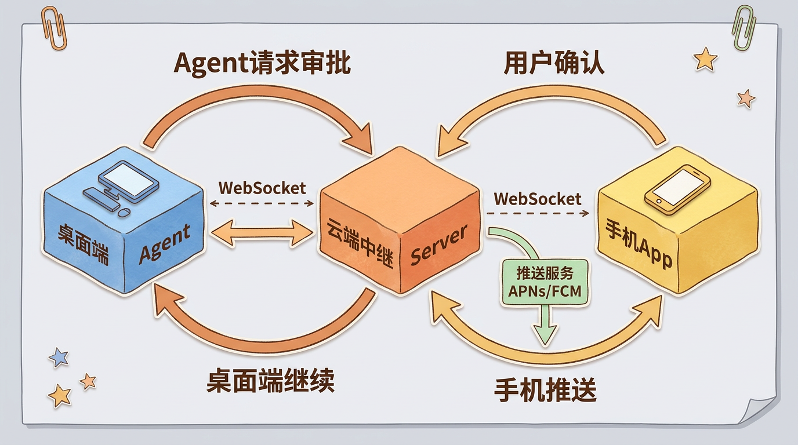
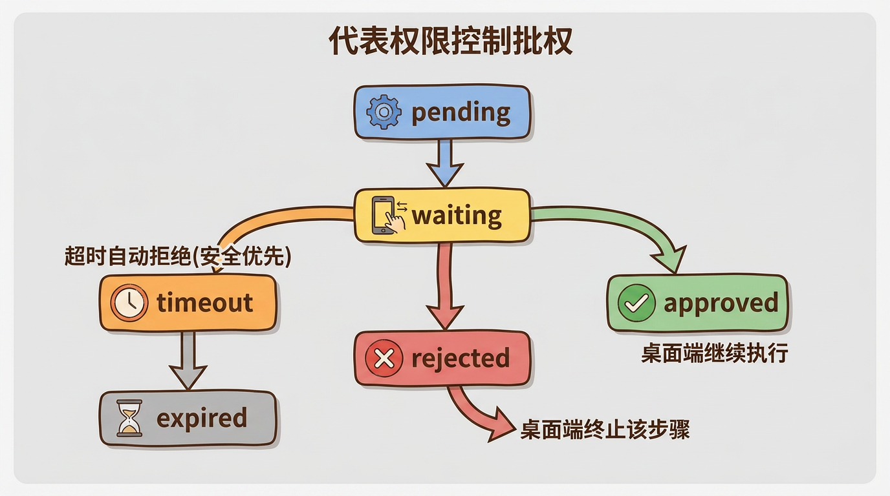
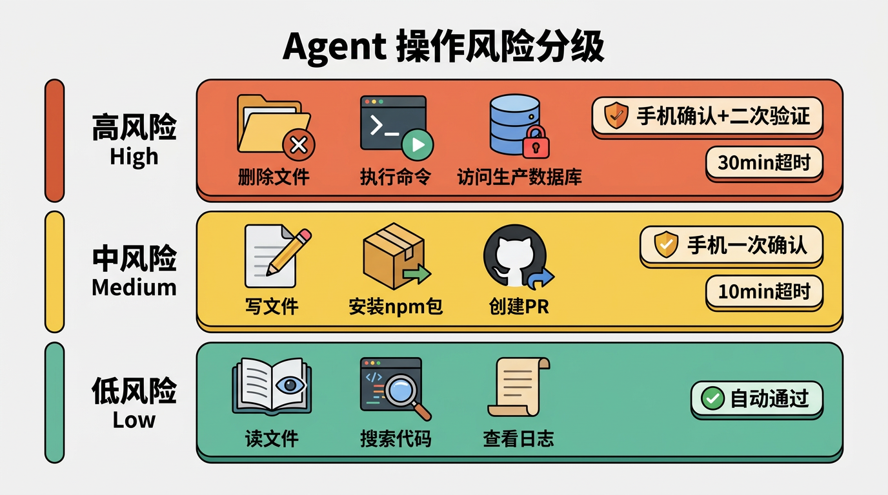
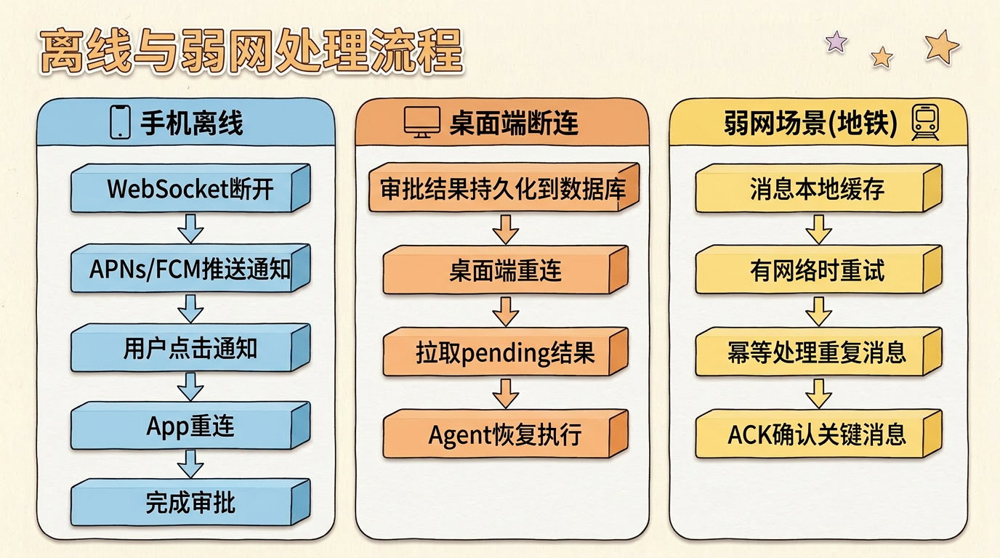

远程控制权限链路：手机审批如何控制桌面端Agent
很多人觉得远程控制就是”加个WebSocket”。手机发指令，电脑执行，完成。
但真正的问题是：当Agent在桌面端自主执行时，它可能要做危险操作——删文件、执行命令、访问数据库。你不可能让它全自动，但用户又不在电脑前。你需要一个权限审批机制——而且这条链路必须可靠，不能因为网络抖动就挂起整个执行流程。
这不是一个消息推送问题。这是一个分布式系统的状态同步问题。
问题定义
场景很具体：
- Claude Code / Codex / Cursor 在你的电脑上执行代码
- Agent执行到某个步骤，需要你的确认（比如”我要执行
rm -rf /tmp/build，允许吗？”） - 但你在地铁上，只有手机
- 你需要在手机上看到这个请求，点击”允许”或”拒绝”，然后桌面端继续执行
看起来简单，但实际上有几个关键问题：
- 桌面端和手机不在同一个网络——NAT、防火墙、动态IP，直连不可能
- 审批必须可靠——不能因为手机信号不好就丢消息，也不能因为桌面端重启就丢失审批状态
- 超时要有兜底——用户15分钟没回应，Agent不能一直挂着
- 安全——审批消息不能被篡改，审批结果不能被伪造
架构设计
四个角色，缺一不可：

为什么不能桌面直连手机
三个原因：
| 问题 | 说明 |
|---|---|
| NAT穿透 | 手机在4G网络，桌面在公司WiFi，两端都没有公网IP |
| 防火墙 | 企业网络通常不允许入站连接 |
| 动态IP | 手机的IP随时在变，桌面端的IP也不固定 |
所以必须有一个云端中继作为消息的中间人。桌面端和手机都主动连接到云端，云端负责路由消息。
为什么用WebSocket而不是轮询
审批请求的延迟很重要。Agent暂停执行等用户确认，每多等1秒都是浪费。
- 轮询：手机每5秒问一次”有新审批吗？” → 平均2.5秒延迟，加上服务器压力
- WebSocket：云端收到桌面端的审批请求，立即推送给手机 → 毫秒级延迟
代价是WebSocket需要维护长连接，但云端中继本身就承担了这个职责。
审批状态机
这是整个系统的核心。一次审批请求的状态流转：

关键设计决策
1. 唯一审批ID
每次审批请求生成一个UUID，绑定三元组：session_id + run_id + step_id。这保证：
- 桌面端能精确匹配”哪个步骤的审批结果回来了”
- 不会出现A请求的审批被误用到B请求上
- 审计日志可追溯
2. 超时自动拒绝，不是自动通过
默认超时5分钟。为什么是拒绝而不是通过？
安全第一原则。宁可让用户重新执行一次任务，也不能因为超时就自动放行一个可能危险的操作。这是一个不可逆的决策——一旦你让超时=通过，就有攻击者故意让用户断连来绕过审批。
3. 幂等性（Idempotency）
同一个审批ID，无论手机发送多少次”approve”，效果都是一样的。幂等性保证了即使网络重传导致消息重复投递，也不会产生重复处理。
风险分级
不是所有操作都需要等手机确认。

| 风险等级 | 操作示例 | 审批方式 | 典型超时 |
|---|---|---|---|
| Low | 读文件、搜索代码、查看日志 | 自动通过 | - |
| Medium | 写文件、安装npm包、创建PR | 手机一次确认 | 10min |
| High | 删除文件、执行shell命令、访问生产数据库 | 手机确认+二次验证 | 30min |
风险等级怎么定？两个维度：
- 操作类型：读 < 写 < 删除 < 执行命令
- 目标资源：临时文件 < 项目文件 < 系统文件 < 生产环境
一个简单的规则：操作是否可逆？ 可逆的操作风险低，不可逆的操作风险高。删除文件不可逆，所以要高等级审批。写文件可逆（可以git revert），所以中等。
离线与弱网处理
这是真实场景中最容易出问题的地方。

手机离线
用户手机没信号、关机、或者App被杀了。审批请求怎么办？
- 云端中继检测到手机WebSocket连接断开
- 走推送服务（苹果APNs / 安卓FCM）发送通知
- 用户看到通知：”Agent请求执行
rm -rf /tmp/build“ - 点击通知 → 唤起App → WebSocket重连 → 完成审批
关键是：推送通知是兜底方案，不是主方案。 推送有延迟（APNs可达几秒到几分钟）、不可靠（用户可能关了通知）、没有双向通信能力。但它能在App不活跃时把用户拉回来。
桌面端断连
桌面端网络断了或者崩溃了。审批结果怎么办？
- 云端中继把审批结果持久化（数据库/Redis）
- 桌面端重连后，拉取所有pending的审批结果
- Agent从断点恢复执行
审批结果不能丢。 用户在手机上审批了操作，如果桌面端没收到，等于审批失效。所以至少一次投递（at-least-once delivery）是底线，加上幂等性保证不重复执行。
弱网场景
手机在地铁上，信号时断时续：
- 消息发送失败 → 本地缓存 → 有网络时重试
- 审批结果重复发送 → 幂等处理 → 无副作用
- 关键消息（审批创建、审批结果）需要确认（ACK，即接收方收到后回复一个确认信号），不关键的状态更新可以丢弃
安全考量
审批链路是Agent系统的安全命脉。如果攻击者能伪造审批结果，等于拿到了系统的完全控制权。
消息签名
每条消息都带签名：
1 | message = { |
桌面端收到审批结果后，先验证签名。HMAC-SHA256是一种基于共享密钥的消息认证算法——只有持有密钥的双方才能生成和验证签名。签名不对，直接丢弃。
防重放攻击
攻击者截获了一条合法的”approve”消息，然后重复发送。
防御：每条消息带timestamp和nonce（一次性随机数）。云端中继维护一个已处理nonce的集合（TTL即Time-To-Live，设为超时时间后自动清理），重复的nonce直接拒绝。
审计日志
每次审批的完整生命周期都记录：
- 审批创建时间、操作描述、风险等级
- 通知发送时间、手机接收时间
- 用户审批/拒绝时间
- 桌面端ACK时间
这不是可选项。如果你的Agent系统要给企业用，审计日志是合规要求。
一句话总结
远程控制权限链路的本质是：在不可靠的网络上，构建一个可靠的分布式状态同步协议。 它需要云端中继解决连通性、状态机解决一致性、推送服务解决可用性、签名验证解决安全性。
任何一个环节出问题，Agent就卡住。这看似简单的需求，背后的工程复杂度往往超出预期。